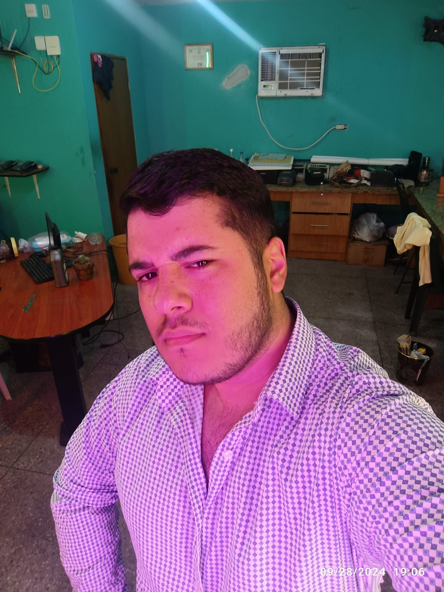

Facebook de la novia
Facebook de la novia

Facebook del novioUn poco de ambiente para que te emociones más con esta bonita pagina, todo esto lo hago por y para ti mi cereza ♥♥♥.
-Estoy muy contento con todo esto, me siento tan seguro y afortunado contigo.
Gracias a Dios hoy logramos cumplir nuestro primer mes juntos, se que todo esto fue muy fugaz pero soy fiel creyente que lo que vale es la conexión y no el tiempo. Por eso puedo decir con base de que me siento lo suficientemente seguro para amarte y aprender de ti para ser lo que te mereces.
Eres eso que todo quisiera tener, no me importa tus locuras o forma de ser porque ESO es lo que te hace unica y perfecta. Nadie es perfecto pero tú no eres nadie, eres mi princesa ♥. Me tienes colgando en tus manos como dice la canción 🗣♥.
Tú eres mi cereza, la cereza del pastel de mi vida. Esa cerezita que es tan linda y pequeña, me empalagas como el dulce y a mi me encanta el dulce. Mi cereza ♥.
En este mes que llevamos conociéndonos he logrado notar la sutilidez de tus palabras, ese toque que le da el gusto a la comida, lo que me hace enamorar, exactamente eso eres tú. Algo perfecto y pococomún, podría decir que incluso eres algo mítico. Ese logro o trofeo que no cualquiera quiere alcanzar solo aquel necio que te desea. Eres alguien espectacular como Mary Jane Watson, y sabes? Yo soy el hombre araña, el novio de Mary Jane Watson, tú eres mi novia 🗣♥♥.
Esta vez quería hacer algo diferente, no solo texto... Pido perdón, para la proximá lo haré mejor ♥
Gracias por darme un hermoso mes de felicidad, anhelo muchos más, conocerte más y aprender a amarte a tu manera como siempre has querido que lo hagan, eres inteligente y muy especial, jamás dudes lo perfecta que eres, me gusta tanto alejandra, te amo mushote 💕💕💕